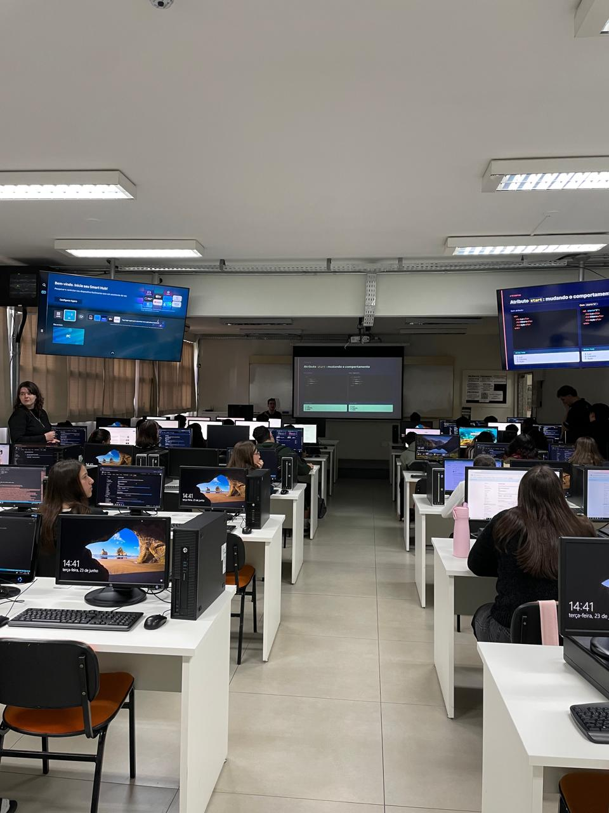

Relatório – 7ª Aula
Data: 23/06/2026
Turma: A
Instrutor:Victor
HTML Semântico
Na aula de Pensamento Computacional, o instrutor Victor iniciou verificando se os alunos já haviam enviado
seus projetos anteriores (HTML, CSS e JavaScript) para o GitHub, passando em seguida a orientá-los na publicação
das páginas através do GitHub Pages. Após essa etapa prática, a turma acompanhou uma apresentação teórica sobre
atributos de tags (como id, class e target) e a importância do HTML semântico, destacando o uso de tags como
No geral, tivemos uma aula muito boa, já que os alunos gostam bastante dessa parte prática de colocar a mão na massa. Foi bem legal acompanhar o começo deles na arquitetura de um site e ver como transformaram a teoria em código.
